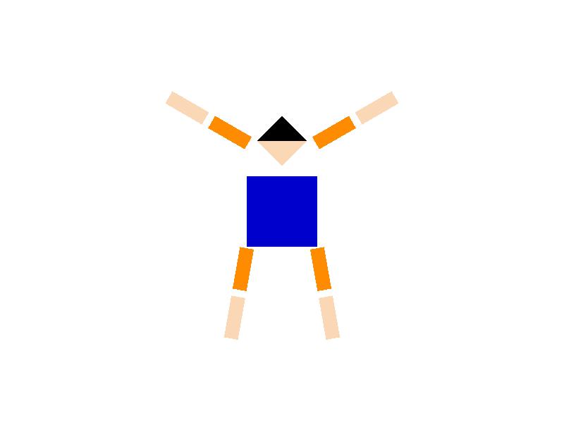
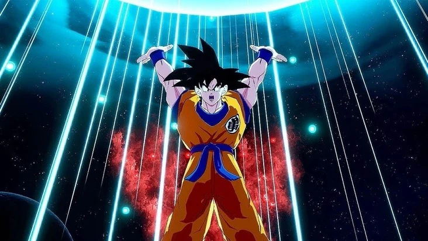
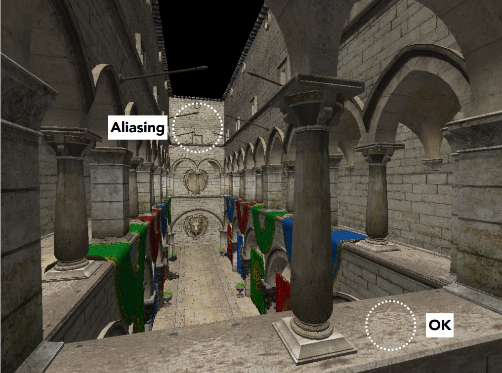
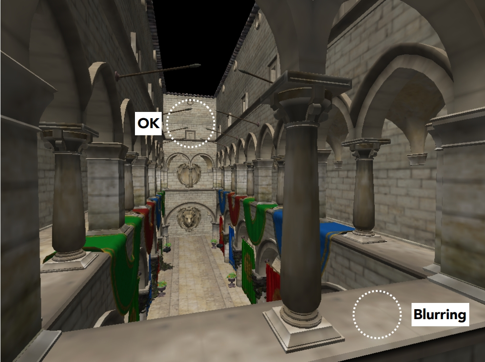

CS184/284A Spring 2025 Homework 1 Write-Up

Task 1: Drawing Single-Color Triangles
Before working on rasterizing, I made sure that the triangles are consistent with its orientation, in this case making them all clockwise. So I check the coordinates and apply a test on them. This is done by calculating the signed area using the coordinates of each vertex. The formula is shown below:\[ (x_1 - x_0)(y_2 - y_0) - (x_2 - x_0)(y_1 - y_0) \]
If the value is positive, the vertices are ordered clockwise.If the value is negative, the order is counterclockwise and the algorithm will swap two vertices to make it clockwise.After ensuring the same orientation, I turn the triangle into edge vectors for implementation purposes. Each side of triangle also becomes a vector. Vertices are represented as A, B, and C. Edges are are represented as AB, BC, and CA. Then we get the bounding box by calculating the min and max of these points coordinates. The value is taken floor/ceiling to make sure it does not miss anything. Then we apply the sampling method from lecture,three lines test, on each pixel within bounding box to determine whether it should be filled. I computed inward-facing normal vectors by taking the cross product of each edge with z-axis unit vector (0, 0, 1) to suuport the Three-Line Test.
The three line test can be breaked down into 3 steps
- For each edge, subtract the edge's startubf vertex from the pixel to get directional vector.
- Take the dot product of the directional vector with the edge's inward-facing normal vector.
- If all three dot products are non-negative, that means the pixel lies inside the triangle.
The assignement requires the algorithm to be no worse than checking every pixel within the bounding box. Since my algorithm is exactly the same approach, it meets the requirement. Extra credit not attempted

|

|
Task 2: Antialiasing by Supersampling
Supersampling is a technique to improve visual quality of rasterized shapes. The algorithm can be break down into following step:
- Just like previous task, we determine the bounding box first.
- For each pixel inside the bounding box, the algorithm loops through a grid of subsamples, determined by the sqaure root of the sample rate.
- Apply the same three line test as before on each subsample to see whether it is inside the triangle
- If the subsample is inside the triangle, write the corlor value in its corresponding location.
The idea behind supersampling can be seen as rendering in a higher resolution and scale down to the one we have. This is done by using subsample grid within each pixel. Instead of determining the color of a pixel from a single point, we divide it into subsamples. And the results from all subsamples in a pixel are averaged to determine the color. This approach is a useful tool to remove the sawtooth feeling in the image and to eventually improve image's quality.
To enable Antialiasing, I edited the size pf sample_buffer to adapt. And I modified rasterize_triangle looping method to cover the subsamples and apply the coverage test on them. Finally, I edited the resolve_to_framebuffer to average all subsamples for each pixel before getting the RGB value of the sample.
Task 3: Transforms
I rotated cube man's arms and legs, and changed the color of its hair, forearm, leg, and clothes to match goku's clothes. The whole image is cube man using a spirit bomb.
|

|

|
Task 4: Barycentric coordinates
The Barycentric Coordinates is a coordinate system of triangles that helps obtain smoothly varying values(color, depth, and texture) across surface. In this project, we use barycentric coordinates to interpolate colors between the triangle's three vertices, presenting a smoothly blend from one color to another.
In the image above, the triangle with red, green and blue vertices is rasterized with a continuous blend between the three colors. Because color is computed through weights from each vertex. The weights sum to 1 and determine how much each color contribute to the result.
Task 5: "Pixel sampling" for texture mapping
When we do texture mapping, which is assigning a 2D image texture onto a 3D surface, the pixels typically coreesponds to a non-integer texture coordinates. And because textures' grid is discrete, it gives us a challenge to assign a color from these continuous coordinates.
To solve this, pixel sampling is introduced. It helps us to get the proper coloring so it does not look pixelated. Here we have two methods: Nearest Neighbor Sampling and Bilinear Interpolation Sampling.
- Nearest Neighbor Sampling is selecting the color that is closet to the given coordinate. The approach is considered fast but does not provide great quality.
- Bilinear Interpolation Sampling uses weighted average of the four texels around the given coorginate. This approach would provide better and smoother result than Nearest neighbor sampling but would require more computations.
- The reason why bilinear interpolation sampling provide better result than nearest neighbor sampling is that it samples not just one pixel but a weighted average from all its surrounded pixel to get the best corresponded color.
Nearest Sampling with 1 supersample per pixel is the worst since it has strong aliasing, edges appear to be very jagged. Switching to Bilinear increased texel and surface quality and the color transitions appear to be more natural. And switching from 1 supersamplee to 16 supersample increased the smoothness of the edges and Bilinear and 16 supersamples produce the best result whereas Nearest and 1 supersample produced the worst.
Task 6: "Level Sampling" with mipmaps for texture mapping
|

|

|
In texture mapping, there is a challenge when the screen pixel has a large area in the texture. For example, when viewing a textured surface from far distance would cause aliasing(image above). So to solve this, level sampling is introduced. The approach compute lower-resolution of the texture and select the best one based on different situation. The lower resolution texture is called mipmaps. So when a pixel cover a larger part on the texture, a lower reolution mimap is used to avoid sampling too many texels causing aliasing. The level sampling approach prevent aliasing, improve textures and improve performance(sometimes).
In this project, the implementation is done by computing the difference in UV coordinates beteen a sample and samples around it. Then the difference is used to estimate the screen sampling rate in texture space. The data is passed to function get_level to get the best mipmap level to use for the sample.
- Zero level sampling with nearest pixel sampliing always use the original texture and does not use mipmaps. So it appear to be most jagged.
- Adding Bilinear pixel sampling to zero level sampling would help with smoothness in close range. But would still see some aliasing far away.
- Nearest level sampling with nearest pixel sampling would add mip level choice to adapt better in different sample but still got rough edges.
- Nearest level sampling with bilinear pixel sampling produce the best quality and the least aliasing.
Using level sampling would improve visual quality and adaptability. Sometimes it improves performance speed. But it always increases the memory usage. Using bilinear pixel sampling would always produce a better quality than nearest sampling method but it always comes with a higher cost in computation.